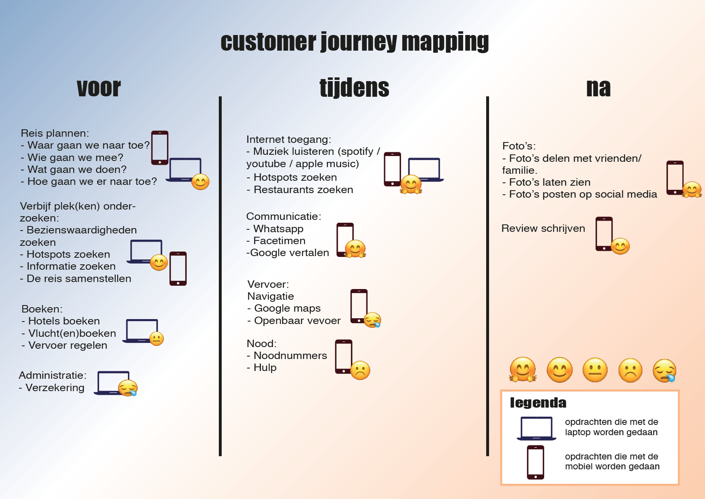
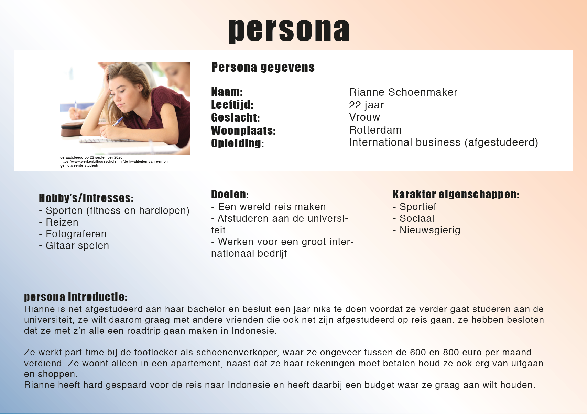

fine budget dining
'Fine Budget Dining' is an app that helps students with a small budget to find the best and cheapest places to eat while they are traveling abroad..
Client: University of applied sciences, Amsterdam second year individual project September - November 2020
problem statement
Students between the age of 18 and 28 already have enough things to pay for with little money, so things like exploring and tasting new culture to the fullest while traveling abroad isn't always possible.
the goal
The goal of the app is to help students find the cheapest places to eat culinair food while the are traveling abroad.
how does it work
By entering your budget on the app, it keeps track of your expenses every day and and it also helps you find the best places nearby to eat that fit your (daily) budget. The app provides restaurants/food nearby that fit your (daily) budget by picking one of the options to eat: pick up, deliver, restaurant or street food, the app provides. The app is connectable with a smartwatch that keeps track of your location and food
the design
The app helps students to find the cheapest places to eat culinair food while the are traveling abroad.
Customer Journey Mapping
*note: I intended to make this concept a multidevice design with a laptop/pc and mobile phone but I later changed it to mobile phone and smartwatch
Persona
The persona supports me creating the product by keeping the user's situation, personality, thoughts and needs in mind.
interface
before the trip
By creating a profile in which your data, budget and maximum expenses are recorded. You will also gain inspiration by looking up the places you are planning to visit, by browsing through the restaurant and dishes recommendations you get and save them in your favorites.
during the trip
The homescreen provides different options and information with choosing food or restaurants that fits within your budget. This can be done in different ways:
- Eating at the places you have saved for the trip.
- Eating on the spot, by searching for the nearest restaurant on the app.
- Order or collect food and eat it at the place where you will be staying.
The homescreen also provides recommendations from nearby restaurants, populair dishes, specific cuisines or just simply cheap and delicious food.
The user can view all data and information of the restaurants needed.
The filter options are designed to help the user and to search as specifically as possible for their eating choices and/or needs
There are times when the user does not have internet or wants to save their data (3G/4G/5G). The website offers an offline function. By downloading information you can find it in your menu and view it without any problems
smart watch
The smartwatch is used in different ways:
- Recommending restaurants in the area
- Track food after you have ordered it.
- Tracking the preparation / waiting time when you pick up
- Gives and guides you to the location of the restaurant where you want to eat.